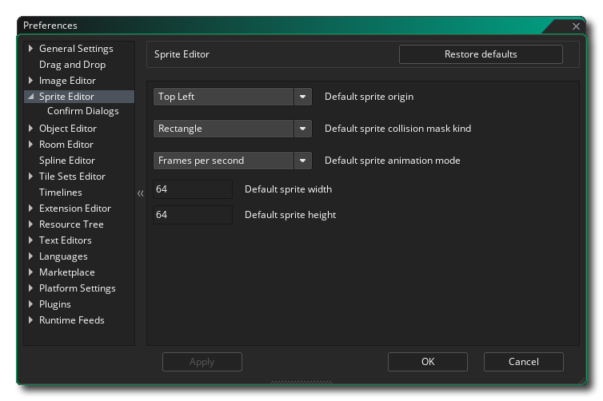

精灵编辑器 偏好设置用来定义精灵编辑器的外观和功能。存在以下选项：
- 默认精灵原点：此选项允许你为创建的所有新精灵资源设置默认的原点位置。默认值是左上（Top Left）。
- 默认精灵碰撞盒类型: 此选项允许你设置用于新精灵的默认碰撞盒类型。可选矩形、旋转矩形、椭圆、菱形或精确（每帧）。默认是矩形。
- 默认精灵动画模式: 该选项允许你在精灵编辑器中为精灵设置默认动画模式。你可以选择“帧每秒”或者“帧每游戏帧”，默认设置是“帧每秒”。
- 默认精灵宽度：此选项允许你设置在精灵编辑器中创建的所有新精灵的默认宽度。默认值为64。
- 默认精灵高度：此选项允许你为精灵编辑器中创建的所有新精灵设置默认高度。默认值为64。
精灵编辑器还有以下子目录：

此处可用选项用于控制在导入新图像时弹出的消息（译者注：默认情况下，系统将提示你继续导入并覆盖现有图像或取消操作）。此选项允许你禁止此消息，并取消导入（“否”），或覆盖当前的精灵（“是”）。 默认值为“显示消息”。
- 自动响应文件导入：当你导入一张已经存在的图片时，默认你会被提示是否要继续导入以覆盖原图或取消当前操作。此选项允许你禁止显示此消息，并始终通过选择“否”取消导入，或通过选择“是”覆盖当前精灵。默认是“显示信息”。
- 自动响应图片加载失败：当你导入新的图片但导入失败时，你默认会收到一个对话框提示告知导入失败。在此你可以选择“确定”来忽略该提示。默认是“显示信息”。